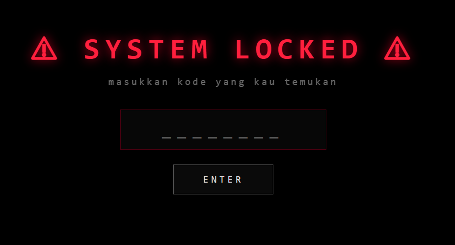
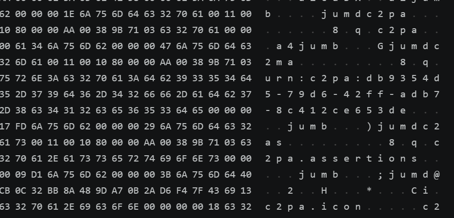
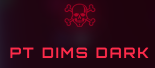

ARG Dimensi adalah permainan realitas alternatif (Alternate Reality Game) yang benar-benar hidup di web — sebuah scavenger hunt dua babak yang menyeret pemain melewati batas antara situs biasa dan sesuatu yang… mengawasi. Tak ada tombol 'mulai main'; petunjuk pertama justru muncul dari rasa bahwa ada yang ganjil pada sebuah halaman yang tampak wajar.
Babak pertama berpura-pura polos. Halamannya sengaja dibuat absurd untuk memancing rasa penasaran — dan kunci untuk maju tak pernah ada di teks yang terlihat. Pemain harus berpikir seperti seorang forensik digital: menggali lapisan bawah halaman, membaca yang tersembunyi di balik piksel dan byte mentah. Jejaknya lalu menuntun keluar dari layar menuju dunia nyata (kanal Instagram PT DIMS), mengaburkan garis antara permainan dan kenyataan.
Yang membuatnya lebih dari sekadar teka-teki adalah rekayasa pertahanannya. Situsnya di-obfuscate agar isi & jawaban tak bisa diintip sembarangan dari balik layar, dibubuhi watermark kepemilikan, dijaga gerbang horror, dan dilapisi pertahanan anti-injeksi supaya tak bisa dicurangi lewat input. Seluruhnya di-host statis di GitHub Pages — ringan, tapi terasa hidup dan waspada. Sebuah pengalaman yang menolak untuk menyerahkan kuncinya kepada siapa pun yang belum menaklukkannya.



Dua babak
Dari web yang terasa 'salah' menuju horror gelap yang mengawasi.
Jejak tak kasat mata
Petunjuk disembunyikan di lapisan bawah halaman — harus digali, tak terbaca mata biasa.
Menembus ke dunia nyata
Jejak menuntun keluar dari layar ke kanal sosial — game & realita berbaur.
Terminal horror
Suasana Kali Linux, gerbang SYSTEM LOCKED, dan bisikan 'I SEE YOU'.
Berpertahanan
Obfuscation, watermark, dan anti-injeksi agar tak bisa diintip / dicurangi.
Live & statis
Berjalan penuh di GitHub Pages — tanpa server, tetap terasa hidup.